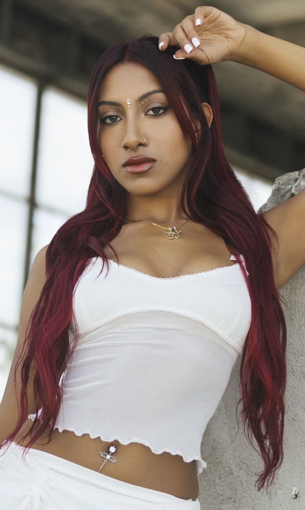
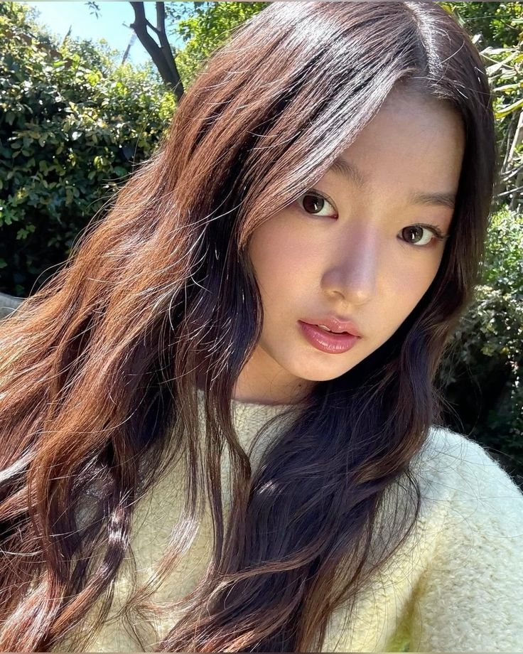

Sophia is the groups leader, she does things such as unifying the group by handling conflicts, help motivate members, and ensuring everyone feels supported and heard. She represented the Phillipines during Dream Academy because that is where she came from.

Megan is the groups All-Rounder, meaning she is a member who is skiled in all key areas of performance, with things such as a vocalist, dancer, and rapper. She was the representation for Hawaii during Dream Academy.

Lara is the groups main vocalist, meaning she is the main singer, typically she is the one who performs the most difficult vocal parts in songs, such as challenging high notes and prominent chorus sections. As a main vocalist, she is expected to have strong pitching, stability and vocal technique, even while performing choreography. She was also one of the girls who represented India in Dream Academy.
Daniela is the groups main dancer, as the title already speaks for itself, she is the main dancer. Her role is to execure the most difficult choreography with precision and to be the standard for all other dancers in terms of technical skill, style, and performance. She is the representation for the US.

Yoonchae is the groups maknae (meaning the youngest) and is a lead dancer, she is the youngest of them all! Her role as a makenae traditionally involves representing youth and charm to fans, and sometimes being responsible for aegyo (acting cute). Yoonchae (or nicknamed, "Yoonchip") represents South Korea.
Manon is the groups main visual, in other words, she is considered the most prettiest member. The member who is considered the official "face" of the group, often selected for their striking looks and captivating presence. She was the representation for Switzerland, for that is where she came from.

made by inka btw